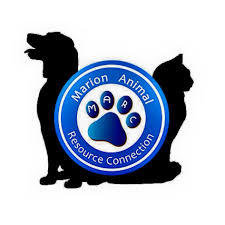

Research Local organizations
Getting started with fostering an animal is a rewarding experience that begins with finding the right organization. Start by researching local animal rescues, shelters, or fostering networks to see which ones are looking for foster homes. Many organizations have specific fostering programs with clear guidelines on how to apply. Once you've chosen a rescue, reach out to inquire about their process and any requirements for becoming a foster parent. The next step is completing an application form, which typically includes questions about your home environment, lifestyle, and experience with animals. Some organizations may also require a home visit or interview to ensure it's a good fit for both you and the animal. After approval, you'll be matched with an animal in need, whether it's a kitten, puppy, or an adult dog or cat.
Be Prepared

Before bringing the animal home, make sure you’re prepared. You’ll need a safe, designated space for them to settle in, such as a separate room for shy animals or a comfy bed for a dog or cat. Some organizations will provide food, medical supplies, and guidance on caring for the pet, while others may require you to supply some of these items yourself. During the fostering period, it's essential to be patient, especially if the animal has had a difficult past. Regular communication with the rescue organization is key; they will guide you on training, socialization, and addressing any issues that may arise. Fostering requires time and commitment, but the joy of seeing an animal thrive in your care is incredibly rewarding.
Things You May Need:
- Appropriate sized kennel and pet bed
- Pet Food
- Play items
- Hygiene products
All of these items can be found at Pet Smart
Marion Animal Resource Connection
For those located near Marion County, Tennessee the MARC office is your best option for fostering. They work with many other shelters around the area. The coordinator will assist in finding a great animal in need of a foster home. Keep in mind that the average time the pet is with you before a permanent home is found is usally 2-6 months. Just enough time to learn about and teach the pet enough for it to be suitable for a new family.